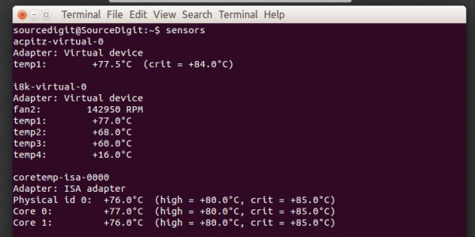
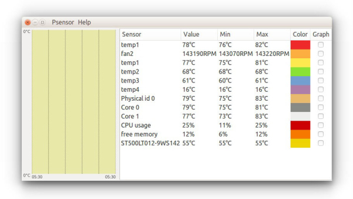

Чтение температуры процессора через консоль

Для чтения температуры CPU в консоли, вам потребуется установить утилиту lm_sensor. Эта утилита может показывать не только информацию о процессоре вашего компьютера, но и многие другие.
Установка утилиты очень проста - вам нужно всего лишь выполнить следующие команды в терминале:
$ sudo apt-get install lm-sensors
После установки, желательно настроить его. Для этого опять-же в консоли набираем следующую команду:
$ sudo sensors-detect
Когда утилита будет спрашивать всякие вопросы, можете просто набирать yes.
Пользоваться lm-sensors очень легко:
$ sensors
При наборе этой команды, вам выведется различная информация о вашем компьютере, включая температуру процессора.
Бонус
А теперь я хочу рассказать о маленьком трюке, который я применяю. Набирать sensors каждый раз может быть очень утомительно. Именно поэтому я беру и совмещаю эту команду с watch:
$ watch sensors
В результате - вы сможете следить за температурой процессора в реальном времени.
Psensor - ГУИ приложение для показа температуры CPU

Psensor - это графическое приложение для мониторинга температуры железа. Он может показывать:
Установка Psensor в Ubuntu
Так-как Psensor является графическим интерфейсом к другим утилитам, вам сперва придется установить некоторые зависимости:
$ sudo apt-get install lm-sensors hddtemp
После этого вам нужно настроить lm-sensors как указано выше. И после этого установить Psensor командой:
$ sudo apt-get install psensor
Найти приложение можете через Dash-меню.